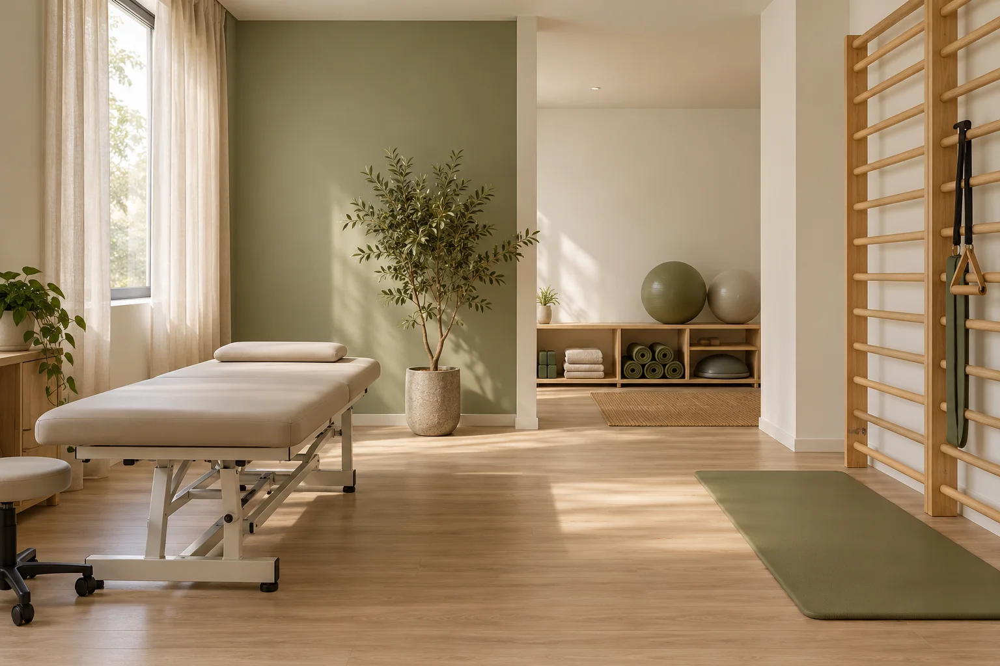

Fisioterapia e movimento
O cuidado começa pelo seu movimento.
Escuta, presença e atenção à sua rotina. Uma proposta de cuidado que respeita o seu ritmo.
Espaço fictício · Atendimento demonstrativo
Seu corpo.
Sua rotina.
Seu tempo.
A proposta da Equilíbrio começa pelo diálogo. Entender como você se move e o que faz parte do seu dia ajuda a construir um acompanhamento individual.
Escutar
Conhecer o contexto antes de planejar.
Acompanhar
Olhar para o movimento no dia a dia.
Respeitar
Valorizar as necessidades de cada pessoa.
Serviços
O movimento
faz parte da vida.
Explore as áreas de acompanhamento e conheça a proposta de cada atendimento.

Fisioterapia musculoesquelética
Uma proposta de avaliação e acompanhamento para questões relacionadas ao movimento e à rotina.
Conversar sobre atendimentoReabilitação funcional
Um espaço para conversar sobre atividades do dia a dia e planejar o acompanhamento individual.
Conversar sobre atendimentoMovimento e consciência corporal
Atenção à relação entre corpo, movimento e contexto, em uma abordagem apresentada de forma individual.
Conversar sobre atendimentoAcompanhamento da rotina
Escuta e acompanhamento ao longo das etapas, respeitando as necessidades de cada pessoa.
Conversar sobre atendimentoPerfil profissional fictício
Antes de qualquer movimento, escuta.
Laura Martins é a personagem fictícia que apresenta a proposta da Equilíbrio. Uma forma de acompanhar pessoas com atenção ao contexto, diálogo sobre a rotina e planejamento individual.
Laura Martins
Personagem da demonstração
O espaço
Um respiro
na sua rotina.
Luz, materiais naturais e espaço para se mover. Um ambiente demonstrativo que traduz a proposta da Equilíbrio.
Informações para você
Vamos conversar
sobre suas dúvidas?
Como funciona a primeira conversa?
A proposta começa com escuta e avaliação individual. Neste modelo, os botões mostram apenas uma simulação de agendamento.
Preciso escolher um atendimento antes de conversar?
Você pode conhecer as áreas de cuidado e conversar sobre o atendimento mais adequado. Na versão demonstrativa, nenhuma consulta é marcada.
Onde fica a unidade?
Esta marca é fictícia. O endereço aparece como “a definir” para ser personalizado com as informações do cliente.
Este site oferece atendimento de saúde?
Não. Marca, profissionais, serviços, horários e imagens são ilustrativos. Esta é uma demonstração de site criada pela TS Digital.
Vamos conversar?
Comece pelo
seu momento.
Agendar uma avaliaçãoAgendamento demonstrativo. Nenhuma consulta será marcada.
Horários demonstrativos
- Segunda a sexta
- 08h às 18h
- Sábado
- 09h às 12h
Localização
Espaço demonstrativo. Endereço a definir.